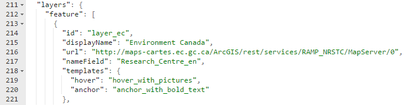
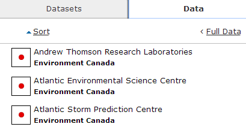

RAMP Quick Start Guide
Work in progress
This page is a work in progress and requires review. Please file an issue if information or coding is missing, incorrect or out of sync with the main repository (ramp-pcar/ramp-pcar).
Welcome to RAMP Quick Start Guide. In this guide, we will be showing you how to setup your own web map using RAMP by adjusting the configuration file. No programming required! View live samples
Requirements
This guide assumes you have downloaded the RAMP source from Github, and have run the Grunt build script. If not, please visit the Getting Started page to get your environment setup.
Map resources
In this guide, examples will be provided using existing web services. We will be using the Natural Resources Canada’s basemap in our example. As for the feature layers, we will be using a snapshot of the dataset from Science.gc.ca’s Research Centres map layer.
Layer 0 - Environment Canada Research Centres
Layer 1 - Agriculture and Agri-Food Canada Research Centres
Layer 2 - Fisheries and Oceans Canada Research Centres
Layer 3 - Natural Resources Canada
Layer 4 - National Research Council
Layer 5 - Other Centres
JSON Editor
RAMP is designed so that data layers and common settings can be set via a configuration file or service. Of course, more complex customizations can be made to the RAMP code, but a standard “here is my data on a map” website can be set up simply by adjusting the configuration file. The configuration files are located in the root of build folder, there is one for both languages. The file can be updated using a text editor or a json editor.
A full layout of the configuration file can be found here.
Adding a Basemap Layer
The basemaps configuration section defines what basemaps are available in the app. You can delete all and add your own, or use any existing one. Keep in mind that all basemaps with the same projection and same scale levels should have the same value defined in their tileSchema property. Details on the basemap configuration objects can be found here.

Adding an ESRI Feature Layer
ESRI feature layers allow the display of feature data on the map, along with attribute data shown in grids and interactive elements such as hovertips and feature highlighting.
Feature layers to be included in the map are defined in the “layers.feature” section of the configuration file. The feature configuration objects are the most complex in the app, and are fully defined here. Note that many of the configuration items are optional, allowing for smaller nodes if the default values are acceptable.
The main attributes of a Feature layer config node are:
- id: Should be unique to the application.
- displayName: An appropriate name for the layer. It will be displayed in the layer selector.
- url: A rest endpoint to the ESRI feature service for this layer.
- nameField: The attribute field that best describes each feature. This will be displayed in maptips and the summary data grid
Symbology Configuration
Feature layers also need to have a legend / symbology structure to inform the app how to create a legend, and how to derive appropriate icons for each feature. RAMP currently supports the three most common renderer types from an ESRI feature service: Simple renderers, Unique Value renderers, and Class Breaks renderers. This information is used to display icons in maptips, datagrids, the layer selector, and the view legend function.

The symbology details are defined in the symbology node of the feature layer’s config object. The content of the symbology node can differ based on the renderer type. A simple renderer defines one symbol for the entire layer.

Unique Value symbology definitions contain a mapping of values to icon images.

Class Breaks symbology definitions contain a mapping of ranges of values to icon images.

Detailed renderer structures can be found in the config page

Map Tip Configuration
Maptips can quickly display information about a feature. RAMP implements two types of maptips. Hover Maptips show when the user mouses over a feature, and disappears when the mouse goes elsewhere. Anchor Maptips show when the user is viewing the details of a feature, giving a visual cue to what item on the map the details panel is referring to. Anchor Maptips remain on the map until the detail panel is closed.
The contents of the maptips are driven by templates. By default, hover map tip and anchor map tip use generic RAMP templates called feature_hover_maptip_template.json and anchored_map_tip.json template. These templates are located in src\js\RAMP\Modules\templates folder. These templates display a basic “icon and name” for a feature. The name data is derived from the “nameField” in the layer’s configuration. If a custom template is desired, new templates can be added to the above JSON files. To instruct the layer to use a different template, update the values in the templates.hover or templates.anchor configuration nodes to reflect the name of the custom template. As the template names are optional, you may need to add the nodes in your JSON editor.

To create custom templates, please refer to the template guide.
Setting up the Datagrids
RAMP displays tabular data in two different ways. The Summary datagrid shows contains basic, feature identifying information, and provides links to get more details on an individual item. The grid collates all features currently visible on the map across all feature layers. It’s small size allows the grid and map to both be visible at the same time.

Summary datagrid uses templates in file datagrid_template.json to define the content of each row. The default template is “default_grid_summary_row”, which will display the standard layout of icon, feature name, and layer name, along with Zoom To and Details links. To instruct the grid to use a different template for a layer, update the values in the templates.summary configuration nodes to reflect the name of the custom template. As the template names are optional, you may need to add the node in your JSON editor. Keep in mind that rows from your layer will be mixed in the grid with other layers; from a presentation point of view, you may wish to ensure that all layers on a map use templates that harmonize visually.
The Extended datagrid shows a more traditional attribute table. Given the variability of columns between layers, only one layer’s rows are displayed at one time. A drop down is provided to all the user to change which layer is displayed. The large size of the Extended grid results in the map not being visible when it is open. The Extended grid is opened via the “Full data” link button on the Data tab.

The configuration associated with a layer’s Extended grid is located in the datagrid node of the layer config object. Each grid column is defined here, and the order in the gridColumns array will dictate the order they appear in. The following attributes are available for each grid column:
- id: Unique id to identify the column
- fieldName: Field name to access the data value. If using a default grid cell template, this field name will be used to supply data
- width: Column width (e.g. 50px)
- isSortable: A flag to determine if the given column can be sortable
- sortType: Type of sorting for the given column. ‘numeric’, ‘string’, ‘date’, or ‘html’
- alignment: Column alignment (1 for centered, 0 for left aligned)
- title: Column heading
- columnTemplate: The template used to generate content for the given column.
The columnTemplate is used in RAMP to generate the in-cell content for each column. There are four default templates available with RAMP:
- unformatted_grid_value: Generate content based on the column index and field name. Will display the raw value
- title_span: Same as unformatted_grid_value, but if the value is large, it will be shortened and the full value will be displayed on mouse-hover via a tooltip.
- graphic_icon: Will generate an icon based on the current feature and the layer’s symbology.
- details_button: Will generate a button that will open the detail panel for a given feature.
You can add additional templates to file extended_datagrid_template.json and use them in the Extended datagrid. For more information on customizing template, please refer to the Template Guide
For further customization of grids, please refer to DataTables documentation.
Aliases
Field name aliases can be used to display user-friendly text instead of system field names in the details pane. The aliasMap config object maps field names to alias names, and the alias will be used if the mapping is present.
Adding a WMS Layer
Similar to Feature layers, WMS layers are added to the map by adding a configuration object to the layers.wms configuration section. WMS layers are shown on the map as image overlays, so they do not have as many UI components as a Feature layer.
The main attributes of a Feature layer config node are:
- id: Should be unique to the application.
- displayName: An appropriate name for the layer. It will be displayed in the layer selector.
- url: An endpoint to the WMS service hosting the layer.
- layerName: The name of the layer in the WMS service to display.
- format: The mime type of the image the WMS will return.
WMS Legend Configuration
If the WMS layer supports the GetLegendGraphic request, it can be enabled in RAMP by defining the legendMimeType property in the WMS configuration node. The mime type should be compatible with the GetLegendGraphic request. In the application, the legend will be available via the Layer Selector.
WMS Get Feature Info Configuration
If the WMS layer supports the GetFeatureInfo request, it can be enabled in RAMP by defining the featureInfo property in the WMS configuration node. The mime type should describe the values being returned from the request. RAMP supports text, html, and json. Any other formats will be displayed as text. The parser value points to a plugin that will process and format the output. Details on parser plugins can be found here. In the application, clicking the map will trigger the request, and the result will be displayed in the Details pane.
- Date modified: